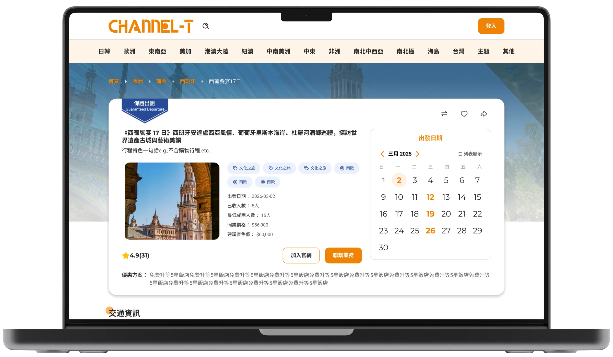
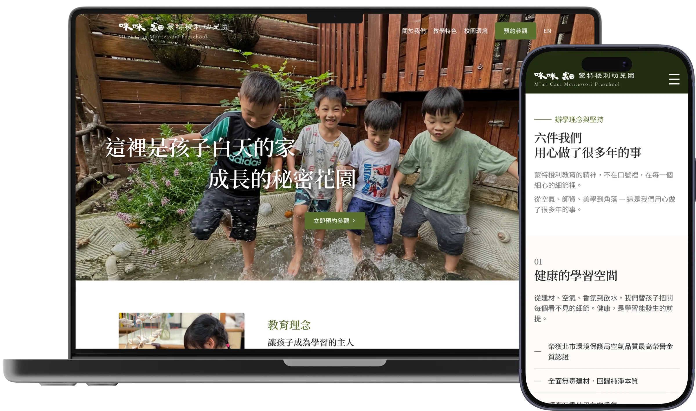
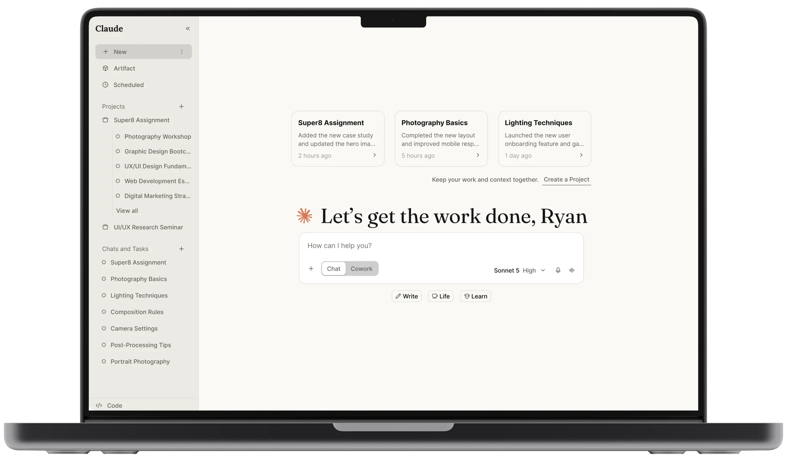

UI/UX Design · Product Management
我是 Ryan，一位在
使用者、商業與技術之間
做產品決策的設計師。
我專注於從使用者需求出發，理解商業目標與技術限制，並透過設計將三者轉化為可落地、可驗證、可持續迭代的產品。以下是我的產品案例研究。
查看案例研究 ↓Case Studies
案例研究
從問題探索、產品策略到商業驗證的完整產品設計流程。

B2B SaaS · Product Design
Channel-T｜智能行程分銷平台
串聯旅遊供應商與旅行社的 B2B 行程分銷平台。主導產品策略、UX/UI 設計與設計系統，並協助團隊取得公司首批供給端客戶。
閱讀完整案例研究 →
Web · Product Design × AI
Mimicasa｜精品幼兒園網站
為台北內湖蒙特梭利幼兒園重塑品牌視覺與數位體驗，數位化參觀預約流程並以 AI 協作獨立完成設計與開發，上線後自然搜尋互動率達 73.91%。
閱讀完整案例研究 →
Product Design · UX
Claude.ai Redesign｜開始任務體驗
針對 Claude.ai 登入後 Chat 頁面，聚焦「回訪使用者延續工作」與 side panel 資訊架構重整，涵蓋 Problem Framing、Design Proposal 與 AI Collaboration 完整思考。
閱讀完整案例研究 →